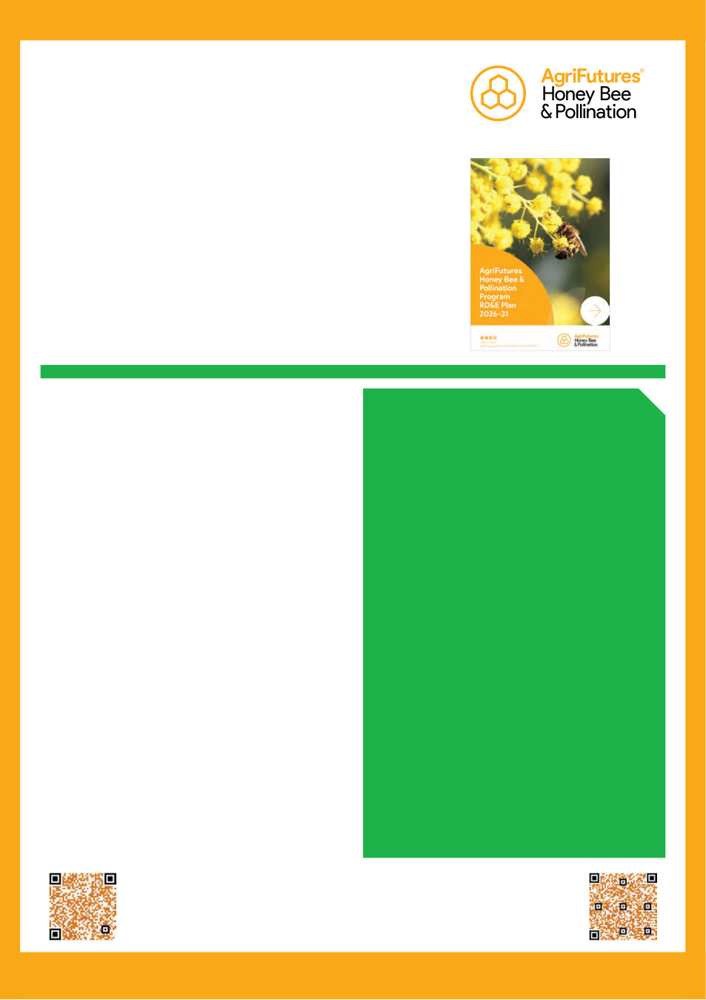

<!DOCTYPE html><html lang="en"><head><meta charset="utf-8">
<meta name="viewport" content="width=device-width,initial-scale=1">
<title>Australian Bee Journal, September 2026 &mdash; page 21</title>
<style>
html,body{margin:0;padding:0;background:#fff}
.sheet{width:calc(210mm * var(--k,1));height:calc(297mm * var(--k,1));overflow:hidden;position:relative}
.scaler{transform:scale(calc(0.83372 * var(--k,1)));transform-origin:top left}
.page{position:relative;width:952px;height:1347px}
.page img.bg{position:absolute;left:0;top:0;width:952px;height:1347px}
p{margin:0;position:absolute}
a{color:inherit}
a:hover{text-decoration:underline}
a.adlink{position:absolute;display:block;z-index:5;text-decoration:none;border-radius:3px;transition:box-shadow .12s,background .12s}
a.adlink:hover{background:rgba(249,197,0,.13);box-shadow:0 0 0 2px rgba(249,197,0,.75) inset}
@font-face{font-family:'Carlito';src:url('../../fonts/Carlito-Regular.ttf');font-weight:400;font-style:normal}
@font-face{font-family:'Carlito';src:url('../../fonts/Carlito-Bold.ttf');font-weight:700;font-style:normal}
@font-face{font-family:'Carlito';src:url('../../fonts/Carlito-Italic.ttf');font-weight:400;font-style:italic}
</style></head><body><div class="sheet"><div class="scaler"><div class="page">

<p style="position:absolute;left:521.1px;top:1311.0px;font-size:13.6px;white-space:nowrap" data-w="376.9"><span style="font-family:Arial,Helvetica,sans-serif">VAA AUSTRALIAN BEE JOURNAL  |  </span><span style="font-family:Arial,Helvetica,sans-serif">VOL. 109 No. 09 September 2026</span><span style="font-family:Arial,Helvetica,sans-serif">  |  21</span></p>
<p style="position:absolute;left:54.4px;top:74.0px;font-size:28.8px;white-space:nowrap" data-w="559.9" data-j="1"><span style="font-weight:700;color:#1db34b;font-family:Carlito,Calibri,'Segoe UI',Arial,sans-serif">New Research, Development and Extension Plan </span></p>
<p style="position:absolute;left:54.4px;top:106.0px;font-size:28.8px;white-space:nowrap" data-w="440.3"><span style="font-weight:700;color:#1db34b;font-family:Carlito,Calibri,'Segoe UI',Arial,sans-serif">for the Honeybee Industry, 2026-2031</span></p>
<p style="position:absolute;left:54.4px;top:157.4px;font-size:19.2px;white-space:nowrap" data-w="358.4"><span style="color:#231f20;font-family:Carlito,Calibri,'Segoe UI',Arial,sans-serif">AgriFutures Honey Bee &amp; Pollination Program</span><span style="font-weight:700;color:#231f20;font-family:Carlito,Calibri,'Segoe UI',Arial,sans-serif"> </span></p>
<p style="position:absolute;left:620.4px;top:22.9px;font-size:13.6px;white-space:nowrap" data-w="277.6"><span style="color:#ffffff;font-family:Arial,Helvetica,sans-serif">INDUSTRY UPDATES FROM THE AHBIC NEWSLETTER</span></p>
<p style="position:absolute;left:55.0px;top:600.3px;font-size:25.6px;white-space:nowrap" data-w="290.3"><span style="font-weight:700;color:#3f474a;font-family:Carlito,Calibri,'Segoe UI',Arial,sans-serif">Shaped with industry input</span></p>
<p style="position:absolute;left:76.9px;top:638.8px;font-size:16.8px;white-space:nowrap" data-w="389.2"><span style="color:#3f474a;font-family:Carlito,Calibri,'Segoe UI',Arial,sans-serif">The RD&amp;E Plan has been informed by a comprehensive </span></p>
<p style="position:absolute;left:55.3px;top:658.8px;font-size:16.8px;white-space:nowrap" data-w="411.2" data-j="1"><span style="color:#3f474a;font-family:Carlito,Calibri,'Segoe UI',Arial,sans-serif">consultation process, ensuring it reflects both current </span></p>
<p style="position:absolute;left:55.4px;top:678.8px;font-size:16.8px;white-space:nowrap" data-w="332.0"><span style="color:#3f474a;font-family:Carlito,Calibri,'Segoe UI',Arial,sans-serif">priorities and future opportunities for the sector.</span></p>
<p style="position:absolute;left:77.7px;top:708.5px;font-size:15.2px;white-space:nowrap" data-w="388.1"><span style="font-family:Carlito,Calibri,'Segoe UI',Arial,sans-serif">More than 2,000 industry members were invited to contribute </span></p>
<p style="position:absolute;left:55.5px;top:726.5px;font-size:15.2px;white-space:nowrap" data-w="413.8" data-j="1"><span style="font-family:Carlito,Calibri,'Segoe UI',Arial,sans-serif">through a national survey, providing insights into key opportunities, </span></p>
<p style="position:absolute;left:55.3px;top:744.4px;font-size:15.2px;white-space:nowrap" data-w="410.6" data-j="1"><span style="font-family:Carlito,Calibri,'Segoe UI',Arial,sans-serif">challenges and emerging trends. This was complemented by targeted </span></p>
<p style="position:absolute;left:55.2px;top:762.3px;font-size:15.2px;white-space:nowrap" data-w="410.6" data-j="1"><span style="font-family:Carlito,Calibri,'Segoe UI',Arial,sans-serif">engagement with key stakeholders and the AgriFutures Honey Bee </span></p>
<p style="position:absolute;left:54.4px;top:780.2px;font-size:15.2px;white-space:nowrap" data-w="411.4" data-j="1"><span style="font-family:Carlito,Calibri,'Segoe UI',Arial,sans-serif">&amp; Pollination Advisory Panel. Scenario planning workshops held in </span></p>
<p style="position:absolute;left:54.7px;top:798.1px;font-size:15.2px;white-space:nowrap" data-w="411.2" data-j="1"><span style="font-family:Carlito,Calibri,'Segoe UI',Arial,sans-serif">Queensland and South Australia brought industry representatives </span></p>
<p style="position:absolute;left:55.5px;top:816.1px;font-size:15.2px;white-space:nowrap" data-w="413.1" data-j="1"><span style="font-family:Carlito,Calibri,'Segoe UI',Arial,sans-serif">together to test potential directions and explore future scenarios. </span></p>
<p style="position:absolute;left:54.7px;top:834.0px;font-size:15.2px;white-space:nowrap" data-w="411.1" data-j="1"><span style="font-family:Carlito,Calibri,'Segoe UI',Arial,sans-serif">Ongoing engagement with the Australian Honey Bee Industry Council </span></p>
<p style="position:absolute;left:54.9px;top:851.9px;font-size:15.2px;white-space:nowrap" data-w="411.5" data-j="1"><span style="font-family:Carlito,Calibri,'Segoe UI',Arial,sans-serif">(AHBIC) further strengthened and refined the Plan as it evolved. A </span></p>
<p style="position:absolute;left:55.2px;top:869.8px;font-size:15.2px;white-space:nowrap" data-w="414.0" data-j="1"><span style="font-family:Carlito,Calibri,'Segoe UI',Arial,sans-serif">draft Plan was also shared more broadly, including through a webinar, </span></p>
<p style="position:absolute;left:55.0px;top:887.7px;font-size:15.2px;white-space:nowrap" data-w="411.9" data-j="1"><span style="font-family:Carlito,Calibri,'Segoe UI',Arial,sans-serif">allowing stakeholders across the industry to provide feedback prior </span></p>
<p style="position:absolute;left:55.5px;top:905.7px;font-size:15.2px;white-space:nowrap" data-w="85.5"><span style="font-family:Carlito,Calibri,'Segoe UI',Arial,sans-serif">to finalisation.</span></p>
<p style="position:absolute;left:77.0px;top:923.6px;font-size:15.2px;white-space:nowrap" data-w="388.8"><span style="font-family:Carlito,Calibri,'Segoe UI',Arial,sans-serif">AHBIC Chair Jon Lockwood has said RD&amp;E remains critical to the </span></p>
<p style="position:absolute;left:55.4px;top:941.5px;font-size:15.2px;white-space:nowrap" data-w="409.3"><span style="font-family:Carlito,Calibri,'Segoe UI',Arial,sans-serif">long-term success of Australia’s honey bee and pollination industry.</span></p>
<p style="position:absolute;left:77.4px;top:959.4px;font-size:15.2px;white-space:nowrap" data-w="388.4"><span style="font-family:Carlito,Calibri,'Segoe UI',Arial,sans-serif">On the new plan, AgriFutures spoke with AHBIC Chair person </span></p>
<p style="position:absolute;left:54.3px;top:977.4px;font-size:15.2px;white-space:nowrap" data-w="411.5"><span style="font-family:Carlito,Calibri,'Segoe UI',Arial,sans-serif">Jon Lockwood who has noted how RD&amp;E remains critical to the </span></p>
<p style="position:absolute;left:55.4px;top:995.3px;font-size:15.2px;white-space:nowrap" data-w="407.6"><span style="font-family:Carlito,Calibri,'Segoe UI',Arial,sans-serif">long-term success of Australia’s honey bee and pollination industry:</span></p>
<p style="position:absolute;left:54.7px;top:515.3px;font-size:28.8px;white-space:nowrap" data-w="373.5" data-j="1"><span style="font-weight:700;color:#1db34b;font-family:Carlito,Calibri,'Segoe UI',Arial,sans-serif">Shaped with Industry Input —  </span></p>
<p style="position:absolute;left:54.7px;top:547.3px;font-size:28.8px;white-space:nowrap" data-w="293.4"><span style="font-weight:700;color:#1db34b;font-family:Carlito,Calibri,'Segoe UI',Arial,sans-serif">and a Request for Quote</span></p>
<p style="position:absolute;left:72.4px;top:1028.6px;font-size:16.8px;white-space:nowrap" data-w="322.8"><span style="font-weight:700;color:#1db34b;font-family:Carlito,Calibri,'Segoe UI',Arial,sans-serif">“RD&amp;E plays a vital role in helping Australian </span></p>
<p style="position:absolute;left:55.6px;top:1047.0px;font-size:16.8px;white-space:nowrap" data-w="386.7"><span style="font-weight:700;color:#1db34b;font-family:Carlito,Calibri,'Segoe UI',Arial,sans-serif">beekeepers respond to current challenges and remain </span></p>
<p style="position:absolute;left:55.4px;top:1065.4px;font-size:16.8px;white-space:nowrap" data-w="398.1"><span style="font-weight:700;color:#1db34b;font-family:Carlito,Calibri,'Segoe UI',Arial,sans-serif">competitive and resilient into the future. This Plan sets  </span></p>
<p style="position:absolute;left:55.4px;top:1083.8px;font-size:16.8px;white-space:nowrap" data-w="374.2"><span style="font-weight:700;color:#1db34b;font-family:Carlito,Calibri,'Segoe UI',Arial,sans-serif">a clear direction for investment in the priorities that </span></p>
<p style="position:absolute;left:55.6px;top:1102.2px;font-size:16.8px;white-space:nowrap" data-w="409.0" data-j="1"><span style="font-weight:700;color:#1db34b;font-family:Carlito,Calibri,'Segoe UI',Arial,sans-serif">matter most to industry, ensuring levy funds are directed </span></p>
<p style="position:absolute;left:55.6px;top:1120.6px;font-size:16.8px;white-space:nowrap" data-w="406.7" data-j="1"><span style="font-weight:700;color:#1db34b;font-family:Carlito,Calibri,'Segoe UI',Arial,sans-serif">towards outcomes that strengthen productivity, resilience </span></p>
<p style="position:absolute;left:55.4px;top:1139.0px;font-size:16.8px;white-space:nowrap" data-w="210.2"><span style="font-weight:700;color:#1db34b;font-family:Carlito,Calibri,'Segoe UI',Arial,sans-serif">and long-term sustainability.”</span></p>
<p style="position:absolute;left:508.3px;top:536.7px;font-size:17.6px;white-space:nowrap" data-w="313.0"><span style="font-weight:700;color:#ffffff;font-family:Carlito,Calibri,'Segoe UI',Arial,sans-serif">This Request for Quote closes on Tuesday,  </span></p>
<p style="position:absolute;left:508.6px;top:557.5px;font-size:17.6px;white-space:nowrap" data-w="253.0"><span style="font-weight:700;color:#ffffff;font-family:Carlito,Calibri,'Segoe UI',Arial,sans-serif">22 September 2026 at 12 pm AEST.</span></p>
<p style="position:absolute;left:508.9px;top:582.7px;font-size:20.8px;white-space:nowrap" data-w="284.1"><span style="font-weight:700;color:#ffffff;font-family:Carlito,Calibri,'Segoe UI',Arial,sans-serif">Deliver practical impacts for the  </span></p>
<p style="position:absolute;left:509.1px;top:606.7px;font-size:20.8px;white-space:nowrap" data-w="301.8"><span style="font-weight:700;color:#ffffff;font-family:Carlito,Calibri,'Segoe UI',Arial,sans-serif">honey bee and pollination industry</span></p>
<p style="position:absolute;left:507.9px;top:635.2px;font-size:15.2px;white-space:nowrap" data-w="374.8"><span style="color:#ffffff;font-family:Carlito,Calibri,'Segoe UI',Arial,sans-serif">AgriFutures invites proposals that address one or more of </span></p>
<p style="position:absolute;left:509.1px;top:653.1px;font-size:15.2px;white-space:nowrap" data-w="373.3" data-j="1"><span style="color:#ffffff;font-family:Carlito,Calibri,'Segoe UI',Arial,sans-serif">the priorities and strategies outlined within the AgriFutures </span></p>
<p style="position:absolute;left:508.7px;top:671.0px;font-size:15.2px;white-space:nowrap" data-w="374.5" data-j="1"><span style="color:#ffffff;font-family:Carlito,Calibri,'Segoe UI',Arial,sans-serif">Honey Bee &amp; Pollination Program RD&amp;E Plan 2026-31, or </span></p>
<p style="position:absolute;left:508.9px;top:689.0px;font-size:15.2px;white-space:nowrap" data-w="376.3" data-j="1"><span style="color:#ffffff;font-family:Carlito,Calibri,'Segoe UI',Arial,sans-serif">within the varroa destructor Research Strategy 2024-2027. </span></p>
<p style="position:absolute;left:508.7px;top:706.9px;font-size:15.2px;white-space:nowrap" data-w="373.5" data-j="1"><span style="color:#ffffff;font-family:Carlito,Calibri,'Segoe UI',Arial,sans-serif">Proposals should focus on delivering short-term research </span></p>
<p style="position:absolute;left:509.1px;top:724.8px;font-size:15.2px;white-space:nowrap" data-w="373.2" data-j="1"><span style="color:#ffffff;font-family:Carlito,Calibri,'Segoe UI',Arial,sans-serif">projects, extension or training (~18 months) with immediate </span></p>
<p style="position:absolute;left:509.1px;top:742.7px;font-size:15.2px;white-space:nowrap" data-w="208.0"><span style="color:#ffffff;font-family:Carlito,Calibri,'Segoe UI',Arial,sans-serif">practical implications for industry.</span></p>
<p style="position:absolute;left:508.6px;top:765.2px;font-size:15.2px;white-space:nowrap" data-w="373.6" data-j="1"><span style="color:#ffffff;font-family:Carlito,Calibri,'Segoe UI',Arial,sans-serif">Where applicable, proposals should clearly indicate the </span></p>
<p style="position:absolute;left:509.0px;top:783.1px;font-size:15.2px;white-space:nowrap" data-w="60.8"><span style="color:#ffffff;font-family:Carlito,Calibri,'Segoe UI',Arial,sans-serif">following:</span></p>
<p style="position:absolute;left:506.4px;top:805.6px;font-size:15.2px;white-space:nowrap" data-w="374.2" data-j="1"><span style="color:#ffffff;font-family:Carlito,Calibri,'Segoe UI',Arial,sans-serif">• The project benefits and impacts for the Australian honey </span></p>
<p style="position:absolute;left:518.2px;top:823.5px;font-size:15.2px;white-space:nowrap" data-w="176.1"><span style="color:#ffffff;font-family:Carlito,Calibri,'Segoe UI',Arial,sans-serif">bee and pollination industry.</span></p>
<p style="position:absolute;left:506.4px;top:845.9px;font-size:15.2px;white-space:nowrap" data-w="374.0" data-j="1"><span style="color:#ffffff;font-family:Carlito,Calibri,'Segoe UI',Arial,sans-serif">• The objectives and outcomes of the proposed project and </span></p>
<p style="position:absolute;left:518.2px;top:863.9px;font-size:15.2px;white-space:nowrap" data-w="353.9"><span style="color:#ffffff;font-family:Carlito,Calibri,'Segoe UI',Arial,sans-serif">the link to the RD&amp;E and/or Research Strategy objectives.</span></p>
<p style="position:absolute;left:506.4px;top:886.3px;font-size:15.2px;white-space:nowrap" data-w="374.0" data-j="1"><span style="color:#ffffff;font-family:Carlito,Calibri,'Segoe UI',Arial,sans-serif">• Who will be undertaking all aspects of the work (it must be </span></p>
<p style="position:absolute;left:518.1px;top:904.2px;font-size:15.2px;white-space:nowrap" data-w="364.2"><span style="color:#ffffff;font-family:Carlito,Calibri,'Segoe UI',Arial,sans-serif">clear if new staff and/or students are to be employed to </span></p>
<p style="position:absolute;left:518.1px;top:922.1px;font-size:15.2px;white-space:nowrap" data-w="129.9"><span style="color:#ffffff;font-family:Carlito,Calibri,'Segoe UI',Arial,sans-serif">undertake the work).</span></p>
<p style="position:absolute;left:506.4px;top:944.6px;font-size:15.2px;white-space:nowrap" data-w="374.1" data-j="1"><span style="color:#ffffff;font-family:Carlito,Calibri,'Segoe UI',Arial,sans-serif">• The plan for extension and adoption of research outcomes </span></p>
<p style="position:absolute;left:518.2px;top:962.5px;font-size:15.2px;white-space:nowrap" data-w="364.4"><span style="color:#ffffff;font-family:Carlito,Calibri,'Segoe UI',Arial,sans-serif">from the project activity work, i.e. beyond distribution of </span></p>
<p style="position:absolute;left:517.9px;top:980.4px;font-size:15.2px;white-space:nowrap" data-w="354.5"><span style="color:#ffffff;font-family:Carlito,Calibri,'Segoe UI',Arial,sans-serif">summaries, journal papers and conference presentations.</span></p>
<p style="position:absolute;left:506.4px;top:1002.9px;font-size:15.2px;white-space:nowrap" data-w="374.1" data-j="1"><span style="color:#ffffff;font-family:Carlito,Calibri,'Segoe UI',Arial,sans-serif">• Where relevant, any proposed collaboration with experts </span></p>
<p style="position:absolute;left:518.2px;top:1020.8px;font-size:15.2px;white-space:nowrap" data-w="69.9"><span style="color:#ffffff;font-family:Carlito,Calibri,'Segoe UI',Arial,sans-serif">in the field.</span></p>
<p style="position:absolute;left:506.4px;top:1043.3px;font-size:15.2px;white-space:nowrap" data-w="373.5" data-j="1"><span style="color:#ffffff;font-family:Carlito,Calibri,'Segoe UI',Arial,sans-serif">• The researcher’s understanding of past research in this field.</span></p>
<p style="position:absolute;left:508.0px;top:1065.7px;font-size:15.2px;white-space:nowrap" data-w="374.2"><span style="color:#ffffff;font-family:Carlito,Calibri,'Segoe UI',Arial,sans-serif">The indicative budget for all projects included in this round </span></p>
<p style="position:absolute;left:508.9px;top:1083.6px;font-size:15.2px;white-space:nowrap" data-w="374.3" data-j="1"><span style="color:#ffffff;font-family:Carlito,Calibri,'Segoe UI',Arial,sans-serif">of funding is up to $230,000. The expected timeframe for </span></p>
<p style="position:absolute;left:508.9px;top:1101.6px;font-size:15.2px;white-space:nowrap" data-w="373.6" data-j="1"><span style="color:#ffffff;font-family:Carlito,Calibri,'Segoe UI',Arial,sans-serif">completion from commencement is up to approximately </span></p>
<p style="position:absolute;left:507.6px;top:1119.5px;font-size:15.2px;white-space:nowrap" data-w="69.7"><span style="color:#ffffff;font-family:Carlito,Calibri,'Segoe UI',Arial,sans-serif">18 months.</span></p>
<p style="position:absolute;left:186.5px;top:1193.5px;font-size:15.2px;white-space:nowrap" data-w="147.6"><span style="font-weight:700;color:#231f20;font-family:Carlito,Calibri,'Segoe UI',Arial,sans-serif">Take a deep dive here:  </span></p>
<p style="position:absolute;left:186.2px;top:1211.4px;font-size:15.2px;white-space:nowrap" data-w="280.2"><a href="https://agrifutures.com.au/product/agrifutures-honey-bee-pollination-program-rde-plan-2026-31/" target="_blank" rel="noopener"><span style="font-weight:700;color:#231f20;font-family:Carlito,Calibri,'Segoe UI',Arial,sans-serif">AgriFutures Honey &amp; Pollination RD &amp; E Plan</span></a></p>
<p style="position:absolute;left:77.1px;top:208.4px;font-size:15.2px;white-space:nowrap" data-w="243.8"><span style="color:#231f20;font-family:Carlito,Calibri,'Segoe UI',Arial,sans-serif">The AgriFutures Honey Bee &amp; Pollination </span></p>
<p style="position:absolute;left:54.4px;top:227.5px;font-size:15.2px;white-space:nowrap" data-w="266.5" data-j="1"><span style="color:#231f20;font-family:Carlito,Calibri,'Segoe UI',Arial,sans-serif">Program invests in research, development </span></p>
<p style="position:absolute;left:54.4px;top:246.5px;font-size:15.2px;white-space:nowrap" data-w="266.5" data-j="1"><span style="color:#231f20;font-family:Carlito,Calibri,'Segoe UI',Arial,sans-serif">and extension (RD&amp;E) that improves the </span></p>
<p style="position:absolute;left:54.4px;top:265.5px;font-size:15.2px;white-space:nowrap" data-w="266.5" data-j="1"><span style="color:#231f20;font-family:Carlito,Calibri,'Segoe UI',Arial,sans-serif">productivity, sustainability and profitability </span></p>
<p style="position:absolute;left:54.4px;top:284.5px;font-size:15.2px;white-space:nowrap" data-w="266.5" data-j="1"><span style="color:#231f20;font-family:Carlito,Calibri,'Segoe UI',Arial,sans-serif">of the Australian beekeeping industry </span></p>
<p style="position:absolute;left:54.4px;top:303.5px;font-size:15.2px;white-space:nowrap" data-w="266.5" data-j="1"><span style="color:#231f20;font-family:Carlito,Calibri,'Segoe UI',Arial,sans-serif">and secures the pollination of Australia’s </span></p>
<p style="position:absolute;left:54.4px;top:322.5px;font-size:15.2px;white-space:nowrap" data-w="214.3"><span style="color:#231f20;font-family:Carlito,Calibri,'Segoe UI',Arial,sans-serif">horticultural and agricultural crops.</span></p>
<p style="position:absolute;left:77.1px;top:341.6px;font-size:15.2px;white-space:nowrap" data-w="243.8"><span style="color:#231f20;font-family:Carlito,Calibri,'Segoe UI',Arial,sans-serif">The R, D &amp; E Plan 2026-31 has been </span></p>
<p style="position:absolute;left:54.4px;top:360.6px;font-size:15.2px;white-space:nowrap" data-w="266.5" data-j="1"><span style="color:#231f20;font-family:Carlito,Calibri,'Segoe UI',Arial,sans-serif">developed in consultation with industry to </span></p>
<p style="position:absolute;left:54.4px;top:379.6px;font-size:15.2px;white-space:nowrap" data-w="266.5" data-j="1"><span style="color:#231f20;font-family:Carlito,Calibri,'Segoe UI',Arial,sans-serif">guide strategic investment over the next </span></p>
<p style="position:absolute;left:54.4px;top:398.6px;font-size:15.2px;white-space:nowrap" data-w="266.5" data-j="1"><span style="color:#231f20;font-family:Carlito,Calibri,'Segoe UI',Arial,sans-serif">five years. It provides a clear framework </span></p>
<p style="position:absolute;left:54.4px;top:417.6px;font-size:15.2px;white-space:nowrap" data-w="266.5" data-j="1"><span style="color:#231f20;font-family:Carlito,Calibri,'Segoe UI',Arial,sans-serif">for RD&amp;E that is focused on practical </span></p>
<p style="position:absolute;left:54.4px;top:436.6px;font-size:15.2px;white-space:nowrap" data-w="63.7"><span style="color:#231f20;font-family:Carlito,Calibri,'Segoe UI',Arial,sans-serif">outcomes </span></p>
<p style="position:absolute;left:130.3px;top:436.6px;font-size:15.2px;white-space:nowrap" data-w="20.8"><span style="color:#231f20;font-family:Carlito,Calibri,'Segoe UI',Arial,sans-serif">for </span></p>
<p style="position:absolute;left:163.3px;top:436.6px;font-size:15.2px;white-space:nowrap" data-w="77.5"><span style="color:#231f20;font-family:Carlito,Calibri,'Segoe UI',Arial,sans-serif">beekeepers. </span></p>
<p style="position:absolute;left:253.0px;top:436.6px;font-size:15.2px;white-space:nowrap" data-w="26.2"><span style="color:#231f20;font-family:Carlito,Calibri,'Segoe UI',Arial,sans-serif">The </span></p>
<p style="position:absolute;left:291.3px;top:436.6px;font-size:15.2px;white-space:nowrap" data-w="29.6"><span style="color:#231f20;font-family:Carlito,Calibri,'Segoe UI',Arial,sans-serif">Plan </span></p>
<p style="position:absolute;left:54.4px;top:455.6px;font-size:15.2px;white-space:nowrap" data-w="266.5"><span style="color:#231f20;font-family:Carlito,Calibri,'Segoe UI',Arial,sans-serif">balances immediate industry needs with </span></p>
<p style="position:absolute;left:344.7px;top:208.5px;font-size:15.2px;white-space:nowrap" data-w="266.5" data-j="1"><span style="color:#231f20;font-family:Carlito,Calibri,'Segoe UI',Arial,sans-serif">longer-term opportunities and will guide </span></p>
<p style="position:absolute;left:344.7px;top:227.0px;font-size:15.2px;white-space:nowrap" data-w="266.5" data-j="1"><span style="color:#231f20;font-family:Carlito,Calibri,'Segoe UI',Arial,sans-serif">investment decisions that maximise value </span></p>
<p style="position:absolute;left:344.7px;top:245.5px;font-size:15.2px;white-space:nowrap" data-w="266.5" data-j="1"><span style="color:#231f20;font-family:Carlito,Calibri,'Segoe UI',Arial,sans-serif">for levy payers, leverages co-investment </span></p>
<p style="position:absolute;left:344.7px;top:263.9px;font-size:15.2px;white-space:nowrap" data-w="266.5" data-j="1"><span style="color:#231f20;font-family:Carlito,Calibri,'Segoe UI',Arial,sans-serif">where appropriate and maintains flexibility </span></p>
<p style="position:absolute;left:344.7px;top:282.4px;font-size:15.2px;white-space:nowrap" data-w="193.9"><span style="color:#231f20;font-family:Carlito,Calibri,'Segoe UI',Arial,sans-serif">to respond to emerging threats.</span></p>
<p style="position:absolute;left:344.7px;top:337.1px;font-size:14.4px;white-space:nowrap" data-w="235.0"><span style="font-weight:700;color:#231f20;font-family:Carlito,Calibri,'Segoe UI',Arial,sans-serif">1. Bee health, resilience and production </span></p>
<p style="position:absolute;left:344.7px;top:357.5px;font-size:14.4px;white-space:nowrap" data-w="238.6"><span style="font-weight:700;color:#231f20;font-family:Carlito,Calibri,'Segoe UI',Arial,sans-serif">2. New and emerging pests and diseases </span></p>
<p style="position:absolute;left:344.7px;top:377.9px;font-size:14.4px;white-space:nowrap" data-w="224.1"><span style="font-weight:700;color:#231f20;font-family:Carlito,Calibri,'Segoe UI',Arial,sans-serif">3. Agricultural integration and income </span></p>
<p style="position:absolute;left:358.7px;top:396.1px;font-size:14.4px;white-space:nowrap" data-w="85.7"><span style="font-weight:700;color:#231f20;font-family:Carlito,Calibri,'Segoe UI',Arial,sans-serif">diversification </span></p>
<p style="position:absolute;left:344.7px;top:416.5px;font-size:14.4px;white-space:nowrap" data-w="223.1"><span style="font-weight:700;color:#231f20;font-family:Carlito,Calibri,'Segoe UI',Arial,sans-serif">4. Floral resources and environmental </span></p>
<p style="position:absolute;left:358.7px;top:434.7px;font-size:14.4px;white-space:nowrap" data-w="64.5"><span style="font-weight:700;color:#231f20;font-family:Carlito,Calibri,'Segoe UI',Arial,sans-serif">conditions </span></p>
<p style="position:absolute;left:344.7px;top:455.1px;font-size:14.4px;white-space:nowrap" data-w="258.8"><span style="font-weight:700;color:#231f20;font-family:Carlito,Calibri,'Segoe UI',Arial,sans-serif">5. Product differentiation and new products </span></p>
<p style="position:absolute;left:653.9px;top:1193.5px;font-size:15.2px;white-space:nowrap" data-w="116.8"><a href="https://agrifutures.com.au/funding-opportunity/request-for-quote-deliver-practical-impacts-for-the-honey-bee-and-pollination-industry/" target="_blank" rel="noopener"><span style="font-weight:700;color:#231f20;font-family:Carlito,Calibri,'Segoe UI',Arial,sans-serif">Request for quote </span></a></p>
<p style="position:absolute;left:640.0px;top:1211.4px;font-size:15.2px;white-space:nowrap" data-w="127.3"><a href="https://agrifutures.com.au/funding-opportunity/request-for-quote-deliver-practical-impacts-for-the-honey-bee-and-pollination-industry/" target="_blank" rel="noopener"><span style="font-weight:700;color:#231f20;font-family:Carlito,Calibri,'Segoe UI',Arial,sans-serif">further information.</span></a></p>
<p style="position:absolute;left:344.7px;top:318.8px;font-size:19.2px;white-space:nowrap" data-w="244.5"><span style="font-weight:700;font-family:Carlito,Calibri,'Segoe UI',Arial,sans-serif">Priorities&#160;&amp;&#160;Impact&#160;statements</span></p>
</div></div></div>
<script>
/* Fit each line to the width it occupied in the PDF: stretch the spaces on
   justified lines, and tighten any line the substitute font renders too wide
   (which would otherwise run into the next column). Compression is kept
   gentle on purpose, and backs off completely rather than mashing words
   together when a line (typically bold/display-sized ad text in a
   substitute font) is too far off to fix with reasonable spacing. */
(function(){
  function fit(){
    var ps=document.querySelectorAll('p[data-w]');
    for(var i=0;i<ps.length;i++){
      var p=ps[i];
      p.style.wordSpacing=''; p.style.letterSpacing='';
      var target=parseFloat(p.getAttribute('data-w')), nat=p.offsetWidth;
      if(!target||!nat) continue;
      var d=target-nat, stretch=p.hasAttribute('data-j');
      if(Math.abs(d)<0.5) continue;
      if(d>0&&!stretch) continue;
      if(Math.abs(d)>target*0.18){ continue; } /* too far off to fix by squeezing -- leave it alone rather than crush the spacing */
      var txt=p.textContent||'', sp=(txt.match(/ /g)||[]).length;
      var fs=parseFloat(getComputedStyle(p).fontSize)||12;
      if(sp>0){
        var ws=d/sp, cap=fs*0.6, floor=-fs*0.06;
        if(ws>cap)ws=cap; if(ws<floor)ws=floor;
        p.style.wordSpacing=ws.toFixed(3)+'px';
        d=target-p.offsetWidth;
      }
      if(d<-0.5){
        var n=Math.max(1,txt.length-1), ls=d/n, lf=-fs*0.02;
        if(ls<lf)ls=lf;
        p.style.letterSpacing=ls.toFixed(3)+'px';
      }
    }
  }
  fit();
  if(document.fonts&&document.fonts.ready) document.fonts.ready.then(fit);
  window.addEventListener('resize',fit);
})();
</script>

<script>
/* The reader tells this page how big to draw itself, so text is re-rendered at the new size
   instead of being stretched as a bitmap (which is what happens when an iframe is transform-scaled). */
(function(){
  function setK(k){ document.documentElement.style.setProperty('--k', String(k)); }
  window.addEventListener('message',function(e){ var m=e.data; if(m&&m.abj==='zoom'&&isFinite(m.k)&&m.k>0) setK(m.k); });
})();
</script>
<style>html.bee-on,html.bee-on *{cursor:none !important}</style>
<script>
/* Report the pointer to the parent reader so its bee can follow across the page,
   and hide this document's own cursor only once the parent confirms the bee is on. */
(function(){
  if(window.parent===window) return;
  if(!matchMedia('(hover:hover)').matches) return;
  if(matchMedia('(prefers-reduced-motion: reduce)').matches) return;
  window.addEventListener('message',function(e){
    var m=e.data; if(m&&m.abj==='bee') document.documentElement.classList.toggle('bee-on',!!m.on);
  });
  try{ parent.postMessage({abj:'hello'},'*'); }catch(e){}
  var raf=0,px=0,py=0,pl=false;
  document.addEventListener('mousemove',function(e){
    px=e.clientX; py=e.clientY;
    /* the page hit-tests itself and tells the parent, because a parent cannot
       look inside a same-origin iframe when both are local files */
    pl=!!(e.target&&e.target.closest&&e.target.closest('a[href],area[href]'));
    if(!raf) raf=requestAnimationFrame(function(){ raf=0;
      try{ parent.postMessage({abj:'pointer',x:px,y:py,link:pl},'*'); }catch(err){} });
  },{passive:true});
  document.addEventListener('mouseleave',function(){
    try{ parent.postMessage({abj:'pointerleave'},'*'); }catch(err){} });
})();
</script>
</body></html>